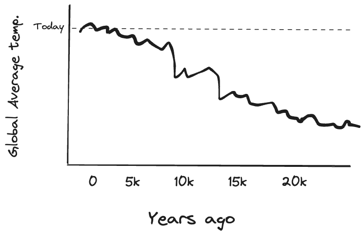
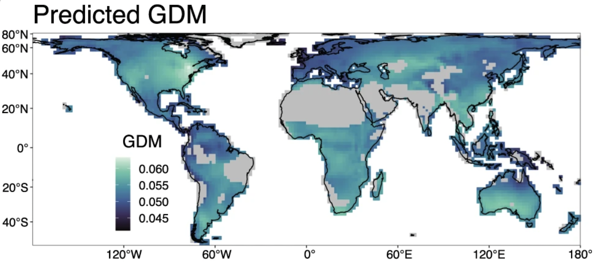
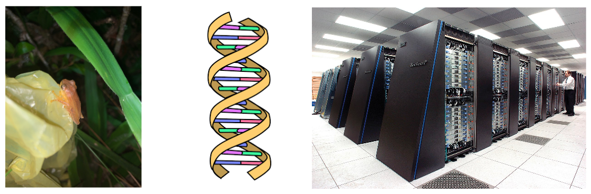

Lab Introduction
Who I am
Scientist
My name is Connor French (call me Connor) and I’m a sixth year PhD candidate in Biology- Ecology, Evolution, and Behavior! I’m advised by Dr. Mike Hickerson and unofficially co-advised by Dr. Ana Carnaval. Outside of my research I enjoy spending time outside with my dog, playing music, and film photography!
Science
I study how populations, species, and communities evolve in response to changing environments.
Global insect genetic diversity

Field, lab, and computer

A photo of a waxy monkey tree frog I sampled in the field in the Brazilian Atlantic Forest.

Data

Lab
Purpose of the lab
The lab portion of the course is mainly devoted to goals (2) and (3) from the syllabus:
(2) use exploration and experiential problem-solving to become familiar with how scientists ask questions, collect data, and analyze it to further knowledge; and 3) develop core technological skills in Microsoft Excel and the statistical programming language R to kick-start their success in future science courses and labs and research endeavors
Learning outcomes
What you tackle during the lab will contribute to all of the learning outcomes stated in the syllabus.
1. Explain how undertaking biological research differs from studying biology in a classroom. 2. Understand the diverse backgrounds from which scientists come. 3. Understand research fundamentals. 4. Understand advanced functions of Microsoft Excel. 5. Manipulate data and undertake analysis in the R statistical computing language.
How a lab will typically go
Data Science
Semester outline
| Week | Lecture Date | Lecture Day | Speaker | Lab Date | Lab Day | Topic |
| 1 | Jan 29 | Mon | First class | Jan 31 | Wed | Introduction/Excel overview |
| 2 | Feb 5 | Mon | Susan Perkins | Feb 7 | Wed | Experiment components/Entering data |
| 3 | Feb 12 | Mon | Lincoln’s Birthday | Feb 14 | Wed | Projects/Formula basics |
Grading
| The final grade will be calculated as follows: | |
| Attendance | 20% |
| Lab assignments | 60% |
| Final projects | 20% |
12 lab assignments, 5 points each. Final project, 20 points.
Blackboard
All lab materials will be hosted on Blackboard. Your grades will be posted there as well. I send emails to the class through Blackboard, so make sure to check your email that’s associated with Blackboard!
Excel introduction
Installation
If you do not have installed Microsoft Office 365 installed on your computer, follow City College’s instructions to install the latest version (for free).
What is Excel?
It is a spreadsheet program developed by Microsoft.
Why use Excel?
- Everyone uses it.
- It has a low barrier to entry.
- It is versatile
- Advanced functionality
- Community support